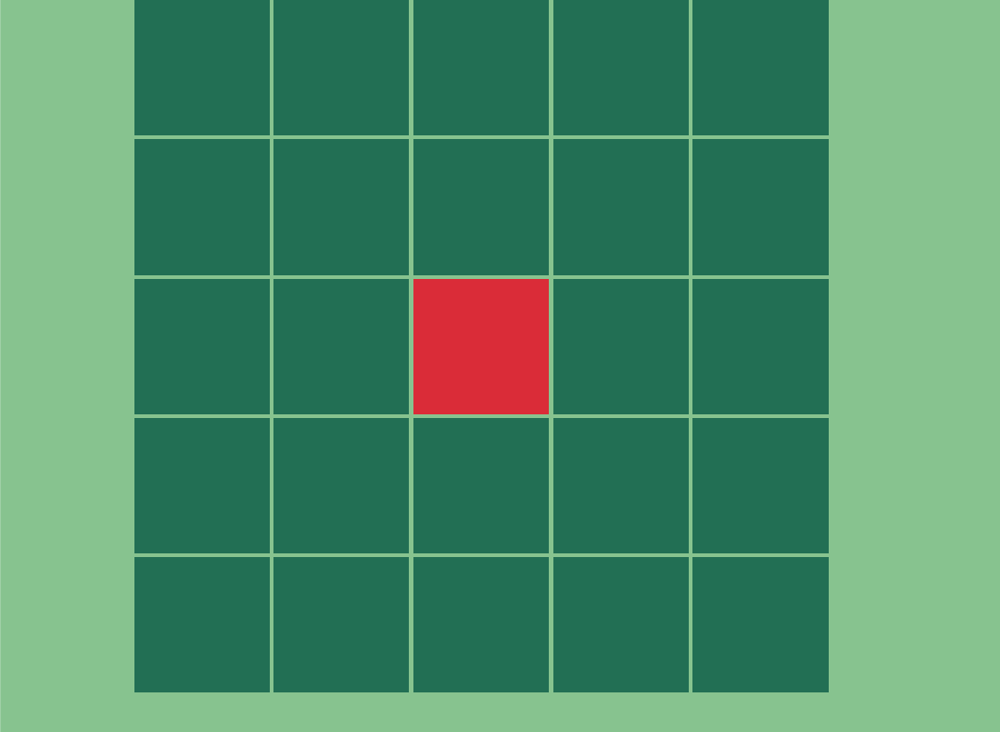
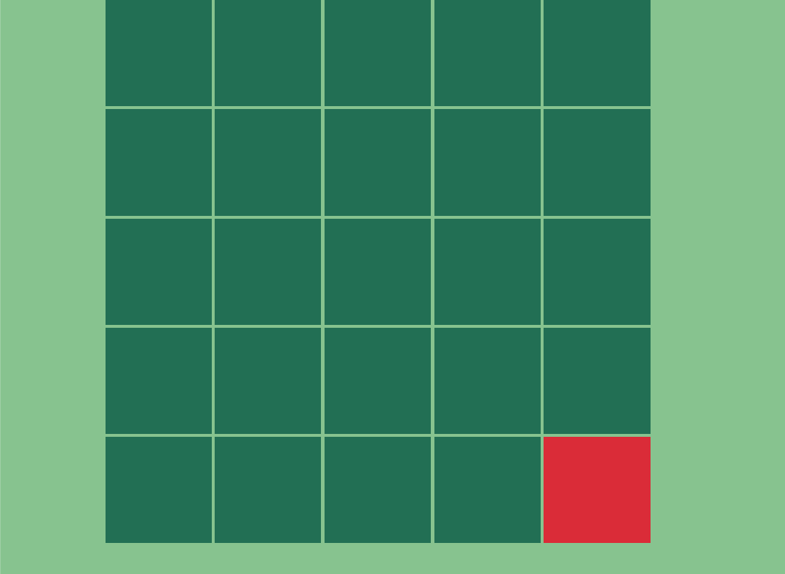
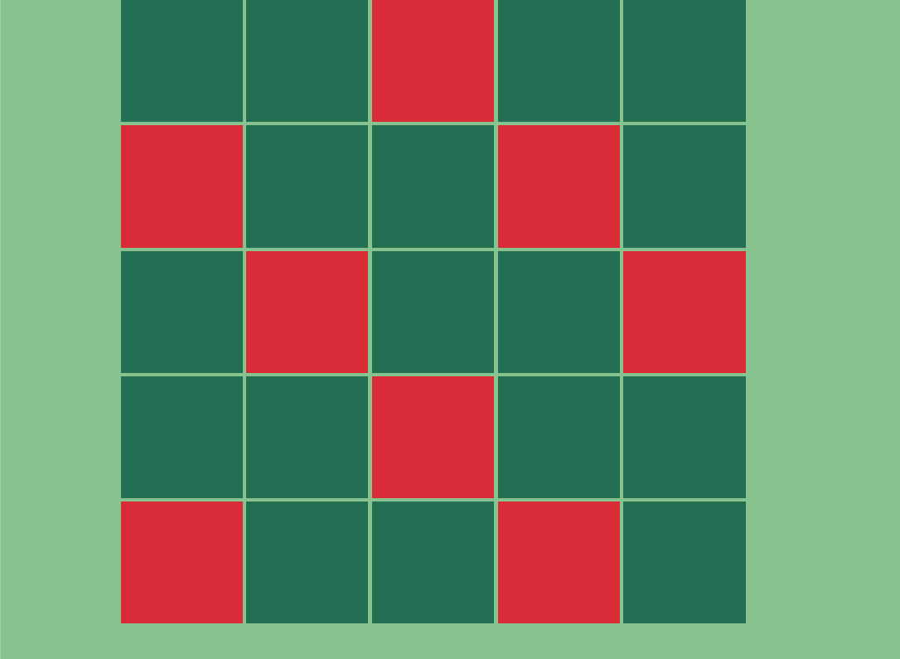
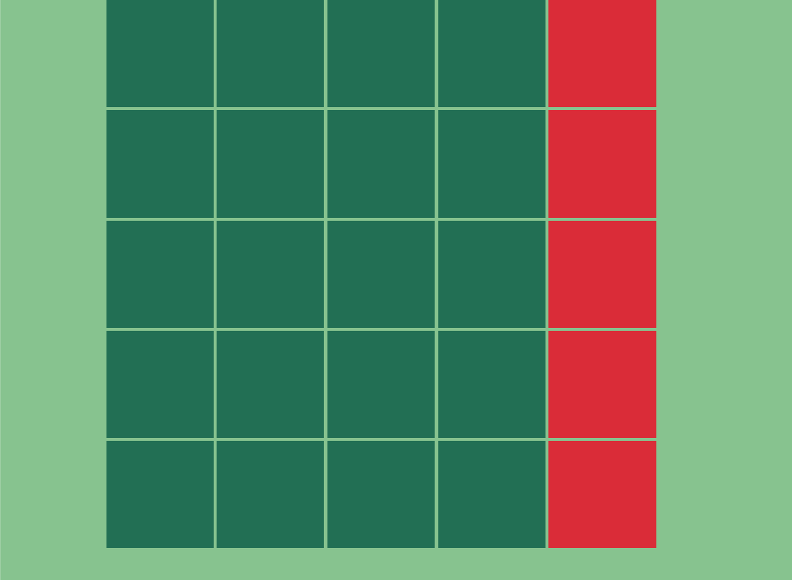

Pour cet exercice, vous devrez à l’aide de pseudo-classes sélectionner les cases adéquates dans une grille afin de reproduire différentes mises en page.
Couleurs‚ÄØüé®
Pour chaque mise en page à réaliser lors de cet exercice, vous devrez:
- Faire un fork du Pen d'origine afin de repartir du début à chaque fois.
- Nommer chacune de ces copies en fonction du nom de l'étape actuelle. Par exemple, pour l'étape 1, nommer votre pen:
Pseudo-classes - Étape 1 . - Utiliser un seul sélecteur CSS par exercice afin de sélectionner les carrés requis et leur attribuer la couleur de fond rouge.
 Étape 2
 Étape 3
 Étape 4
 Étape 5

Pseudo-classes intermédiaires
first-child, last-child, only-child, nth